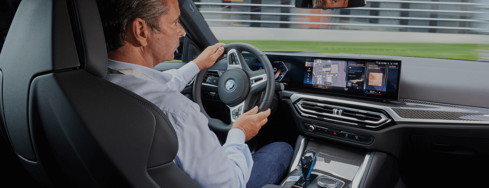

Повернем
к лучшему

Ремонт и обслуживание рулевых механизмов
В 2004 году концерн BMW применил свой первый электроусилитель руля место гидравлического усилителя. Уход от ГУРов растянулся на 10 лет и все современные модели оснащаются «электрическими рейками» разных типов и электромеханическими актуаторами поворота задних колес. Это сложные и хрупкие системы, но мы знаем, как возвращать им жизнь и как делать их надежнее.